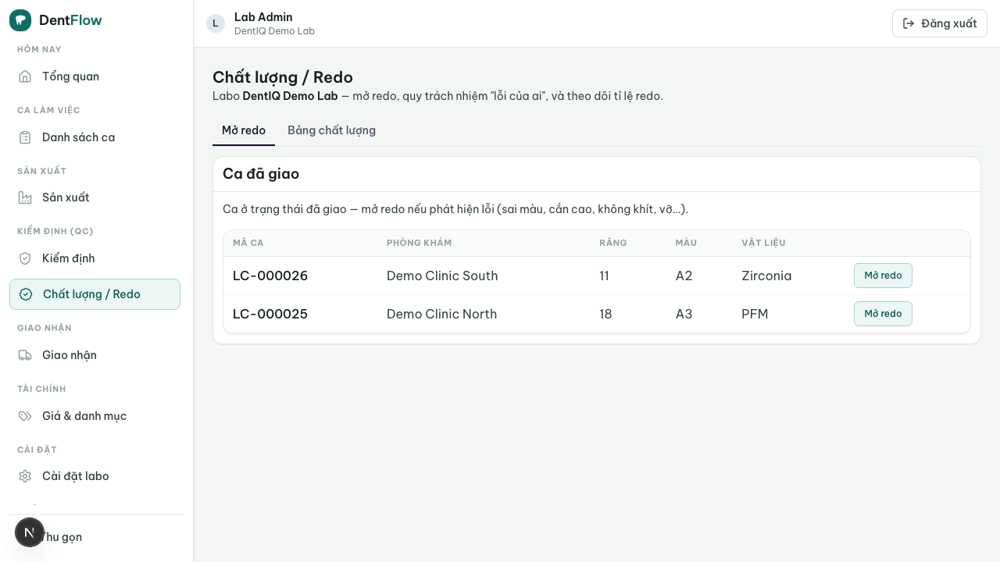
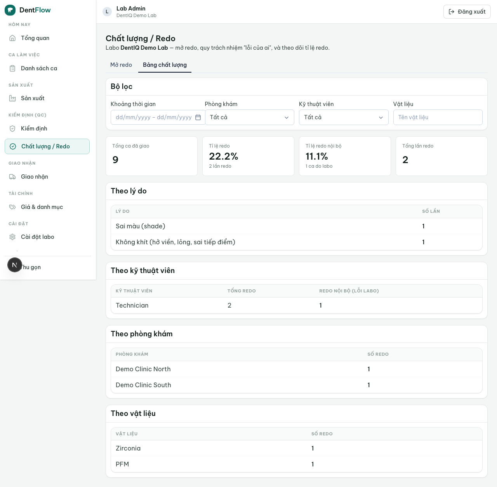

Quản lý redo
Cốt lõi của redo ở VN không phải thao tác làm lại — mà là tranh chấp thương mại "lỗi của ai", và đó là lý do lịch sử đơn hàng truy được có giá trị bằng tiền.
Redo quản lý việc làm lại do lỗi với quy trách nhiệm (fault attribution) làm trục chính. Khi một phục hình bị sai — sai shade, sai tooth, sai material, không khít, hoặc vỡ — labo ghi nhận lý do theo taxonomy cố định và bên chịu trách nhiệm (do labo hay do phòng khám), đối chiếu với lab slip truy được để dàn xếp tranh chấp. Mỗi redo là một nhánh của vòng đời case: delivered → redo → in_production.

Phân loại lý do lỗi
Mỗi redo phải gắn một lý do chính theo taxonomy cố định (BR-01) — để thống kê sạch:
sai-shade— sai màu (sai shade đích hoặc bỏ qua stump shade). Nguyên nhân redo số 1 ở VN.khop-can-cao— cấn khớp / khớp cắn cao (occlusion / high-bite). Số 2.khong-khit— không khít (hở viền, lỏng, sai tiếp điểm).vo— vỡ / nứt phục hình (breakage / vỡ sứ).sai-tooth— sai vị trí răng (FDI) chế tác.sai-material— sai vật liệu so với chỉ định.khac— khác (bắt buộc ghi chú).
Lỗi nhiều nguyên nhân cùng lúc thì chọn một lý do chính và liệt kê lý do phụ ở ghi chú (BR-01a) — không cho nhiều lý do chính để thống kê không bị nhiễu.
Gán bên chịu trách nhiệm
Đây là trục chính. Mỗi redo phải gán bên chịu trách nhiệm (BR-02), không cho để trống:
do-labo— lỗi chế tác. Labo gánh: làm lại miễn phí, ăn chi phí vật liệu + công.do-clinic— Rx / lab slip từ phòng khám chỉ định sai. Mặc định phòng khám gánh (tính phí làm lại theo bảng giá), trừ thỏa thuận thiện chí của labo.
Khi gán trách nhiệm, hệ thống đính kèm bằng chứng từ lab slip / lịch sử đơn (BR-08): ai đã chỉ định shade / material, ảnh tab màu / cùi đã gửi, ghi chú khớp cắn. Đây là cơ chế lịch sử đơn truy được dàn xếp tranh chấp — khi hai bên bất đồng (labo nói do-clinic, clinic nói do-labo), bản ghi được đặt trạng thái dang-tranh-chap và lịch sử đơn là trọng tài trước khi tính tiền. Với lý do vo / sai-material, material provenance (phôi / lô thực dùng) là bằng chứng cốt lõi (BR-10): phôi sai có thể là lỗi nhập vật liệu của labo chứ không phải technician.
Hệ thống ghi who_pays suy ra từ bên chịu trách nhiệm nhưng không tự động ghi công nợ — chỉ gắn cờ để feature công nợ (AR) xử lý (BR-09).
Redo khác warranty
Phân biệt rõ (BR-04): redo xảy ra trước hoặc ngay khi giao (state đi qua delivered → redo); warranty xảy ra sau giao, trong thời hạn bảo hành — xem bảo hành & tra cứu. Một sự cố chỉ thuộc một trong hai, không trùng. Case đã closed mới phát hiện lỗi thì mở warranty nếu còn hạn, không mở redo. Redo-of-redo là nhiều bản ghi trên cùng một case (attempt tăng dần), không tạo case rời rạc (BR-03); và redo phải đi qua QC lại như case thường, không giao thẳng (BR-05).
Thống kê tỉ lệ redo (KPI)
Hệ thống tính tỉ lệ redo = số case redo / tổng case giao, bóc tách theo technician, clinic và material trong khoảng thời gian chọn được, thêm phân rã theo lý do để thấy mode lỗi (BR-06). Redo do-clinic được tách riêng khỏi tỉ lệ chất lượng nội bộ của labo (không tính vào lỗi technician) nhưng vẫn thống kê theo clinic — để labo biết phòng khám nào hay đặt sai và điều chỉnh cách làm việc, giá hoặc đặt cọc (BR-07). Đếm theo case để redo-of-redo không thổi phồng tỉ lệ.

Không đo thì không cải thiện; không có bằng chứng thì luôn thua tranh chấp. Đừng "ngậm bồ hòn" làm lại miễn phí những ca lỗi từ phía clinic — mở redo, gán do-clinic và để lab slip nói thay. Case redo lại bị lỗi thì thêm một bản ghi nữa trên cùng case (attempt tăng), không tạo case mới, để tỉ lệ đếm theo case không bị thổi phồng.